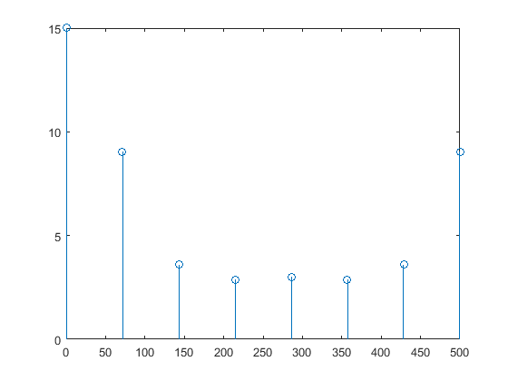

Lab 6
Alapati Sai Varun 1410110037
Contents
clc(); % clear; % close all;
Q1.Calculate the DFT of the given signal of sampling frequency using DIT-FFT algorithm
%xn=input('Enter Input Sequence: '); %fs=input('Enter Frequency in HZ: '); xn=[1 2 3 4 5]; fs=500; N=power(2,ceil(log2(length(xn)))); z=fft(xn,N); xn=[xn zeros(1,N-length(xn))]; xnM=bitrevorder(xn); xKDITFFT=zeros(1,N); for i=1:log2(N) count=1; flag=1; for a=1:N if (flag) xKDITFFT(1,a)=xnM(1,a)+(xnM(1,a+(2^(i-1)))*exp(-1j*((2*pi*(count-1))/2^i))); else xKDITFFT(1,a)=xnM(1,a-(2^(i-1)))-(xnM(1,a)*exp(-1j*((2*pi*(count-1))/2^i))); end count=count+1; if(mod(count,(2^(i-1))+1)==0) count=1;flag=~flag; end end xnM=xKDITFFT; %fprintf('After Stage %d :',i); %disp(xKDITFFT); end fprintf('DIT FFT Values are :'); disp(xnM);
DIT FFT Values are : Columns 1 through 4 15.0000 + 0.0000i -5.4142 - 7.2426i 3.0000 + 2.0000i -2.5858 - 1.2426i Columns 5 through 8 3.0000 + 0.0000i -2.5858 + 1.2426i 3.0000 - 2.0000i -5.4142 + 7.2426i
2.Finding out the frequency range of the given signal and write your observations.
f=0:fs/(N-1):fs;
stem(f,abs(xKDITFFT));
fprintf('Frequencies present in Hz are : ');
disp(f);
Frequencies present in Hz are : Columns 1 through 7
0 71.4286 142.8571 214.2857 285.7143 357.1429 428.5714
Column 8
500.0000
